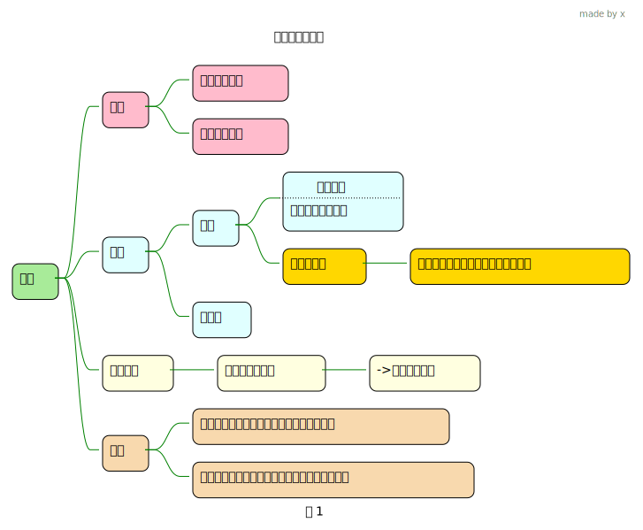

Important
写rust, 也许就好像要时刻提醒自己编写代码时,明确你真正需要使用的是哪个区的内存,什么样结构的内存
1 类型

以1个字节1个字节的方式来读写原本4个字节类型的内存空间
fn main() {
// 10 00000100 00000011 00000001
let mut a = 33817345i32;
struct FourI8 {
first: i8,
second: i8,
third: i8,
fourth: i8,
}
// 将变量a的地址 转换为一个指针 ,指针类型是i32,这个就是a原来的内存读取方式
// 然后再将这个指针 进行类型转换, 转换为 结构体的方式来读取 a 所在的那块内存
let b = &mut a as *mut i32 as *mut FourI8;
unsafe {
println!(
"{} {} {} {}",
(*b).first,
(*b).second,
(*b).third,
(*b).fourth
);
(*b).first = 2;
// 10 00000100 00000011 00000010
println!("{:b}", a);
}
}2 内存对齐
3 Box
fn main() {
// 5 是在 堆上分配的, 栈上的变量b 指向了它
let b = Box::new(5);
let a = 11i64;
let c = Box::new(&a);
println!("b的值 = {:p}", b);
println!("c的地址 : {:p}", &c);
println!("a的地址 : {:p}", &a);
println!("c的值: {:p}", c);
let d = &c as *const Box<&i64> as *const u64;
unsafe {
// c的值是个地址,指向堆上的内存
println!("c的值: 0x{:x}", *d);
let dd = *d as *const u64;
// c的值是地址,该地址所在内存 存的是 a的地址
println!("0x{:x}", *dd);
}
}4 Vec,[T;N],&[T]
fn main() {
let mut vec: Vec<i32> = vec![1, 2, 3, 4];
let arr = [1, 2, 3, 4];
vec.push(5);
let (ptr, len, cap) = (vec.as_ptr(), vec.len(), vec.capacity());
println!("Vec 的指针: {:?}", ptr);
println!("Vec 的长度: {}", len);
println!("Vec 的容量: {}", cap);
// 等价于 let slice_vec:&[i32]=&v;
// let slice_vec = &v[..];
// [T] 本身表示动态大小, &[T] 切片后,确定了长度
let slice_vec = &vec as &[i32];
// 等价于 let slice_arr:&[i32]=&arr;
// let slice_arr = &arr[..];
let slice_arr = &arr as &[i32];
println!(
"vec的ptr:{:p}-slice_vec的ptr:{:p}-{}",
vec.as_ptr(),
slice_vec.as_ptr(),
slice_vec.len()
);
println!(
"arr地址:{:p}-slice_arr的ptr:{:p}-{}",
&arr,
slice_arr.as_ptr(),
slice_arr.len()
);
struct SliceStruct {
a: usize,
b: usize,
}
unsafe {
let b = &slice_vec as *const &[i32] as *const SliceStruct;
// a: cap, b:ptr,c:len
println!("0x{:x}-0x{:x}", (*b).a, (*b).b);
}
struct VecStruct {
a: usize,
b: usize,
c: usize,
}
unsafe {
let b = &vec as *const Vec<i32> as *const VecStruct;
// a: cap, b:ptr,c:len
println!("0x{:x}-0x{:x}-0x{:x}", (*b).a, (*b).b, (*b).c);
}
}5 String,&str
fn main() {
let a = "hello";
let b = "world".to_string();
println!("{:p}-{:p}", &a, a.as_ptr());
println!("{:p}-{:p}-{}-{}", &b, b.as_ptr(), b.capacity(), b.len());
unsafe {
let c = a.as_ptr() as *const u8;
println!("{:p}", c);
let mut d;
for i in 0..10 {
// 一个字节一个字节的打印
d = c.add(i);
// h-e-l-l-o-w-o-r-l-d-
print!("{}-", *d as char);
}
println!("")
}
let e = &b[1..];
println!("{:p}-{:p}", &e, e.as_ptr());
struct StringStruct {
a: usize, // cap
b: usize, // ptr
c: usize, // len
}
let mut s = "hello".to_string();
s.push_str("x");
// 6-10
println!("{}-{}", s.len(), s.capacity());
let b = &s as *const String as *const StringStruct;
unsafe {
// 0xa-0x7f8fbb705f90-0x6
println!("0x{:x}-0x{:x}-0x{:x}", (*b).a, (*b).b, (*b).c);
}
}6 &’static
1fn foo() -> &'static [u8] {
&[1, 2, 3]
}
fn main(){
let b = 1;
println!("b: {:p}", &b);
let a = foo();
// a: 0x10fa97aa0
println!("a: {:p}", a); // 只读内存区
let c = Box::new(2i64);
println!("c: {:p}", c.as_ref());
let d = &c as *const Box<i64> as *const u64;
unsafe {
// c的值是个地址,指向堆上的内存
println!("c指向堆上的地址: 0x{:x}", *d);
}
let s = "abc";
// s: 0x10fa97aa3 , a的 [1,2,3] 占用了3个字节 刚好
println!(" s: {:p}", s.as_ptr()); // 只读内存区
}- 1
-
a.当看到这个可以编译通过时,我就猜测是在编译期直接在只读内存区写入数据,这和字符串字面量实际是一样的
b.当foo()改成返回&[b'a', b'b', b'c'], 你会发现 变量s 关联的只读区和foo()关联的只读区 一样,直接复用了